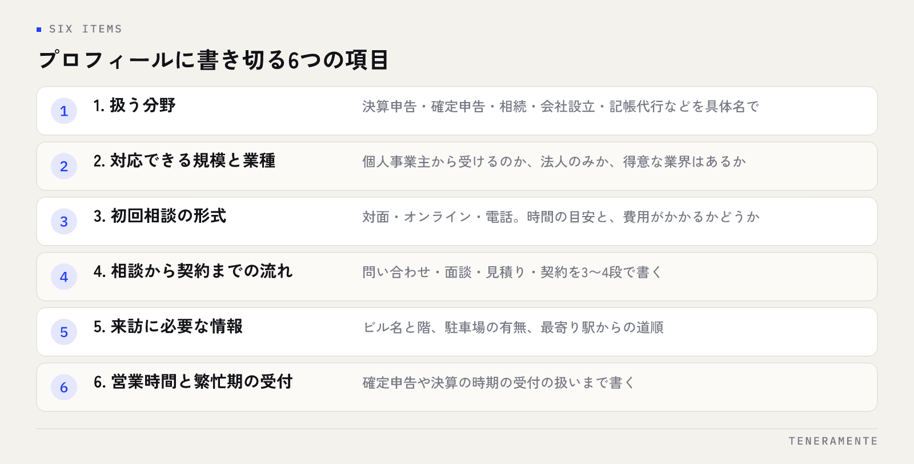

確定申告の時期が近づいた人も、親の相続で手続きに困った人も、まずスマートフォンの地図を開いて「税理士」と地域名を打ち込みます。結論から申し上げると、士業事務所のMEO対策は、どんな相談を誰がどこまで受けられるのかをプロフィールに書き切るところでほぼ決まります。紹介だけで仕事が回ってきた事務所ほど、この部分が空欄のまま残っています。
📌 この記事の結論
Googleビジネスプロフィールに、扱う分野と初回相談の形式、相談から契約までの流れを先に書いてください。そのうえで、スポットの依頼が完了した場面に限って口コミの依頼を組み込む。この2つが、地図検索から相談の申し込みにつながるかどうかの分かれ目です。
01税理士・士業事務所のMEO対策は、相談内容で検索される
MEO（Map Engine Optimization、地図検索での最適化）の解説記事は、飲食店や美容室を前提に書かれたものが大半です。士業の事務所は、そこと検索のされ方が違います。
打ち込まれる言葉は「税理士」単体ではありません。「確定申告 税理士 ○○市」「相続 相談 近く」「会社設立 手続き ○○区」「給与計算 社労士 ○○町」のように、相談したい内容と地域が組み合わさった形で検索されます。業種が入ることもあります。飲食店や建設業、医院のように、業界特有の処理がある事業者は、その業界を見ているかどうかから確認したいからです。
| 項目 | 飲食店・小売 | 税理士・士業事務所 |
|---|---|---|
| 検索する言葉 | 地域名＋業種 | 地域名＋相談内容（確定申告・相続・会社設立など）、業種名 |
| 探す理由 | 楽しみ・習慣 | 期限が来た、手続きが必要になった、今の依頼先に不満がある |
| 見られる情報 | 価格・雰囲気・空き状況 | 扱う分野・初回相談の形式・対応する規模・担当者の顔 |
| 決めるまでの時間 | 短い | 長い（複数の事務所を見比べ、面談してから決める） |
| 口コミが増える場面 | 来店ごと | スポットの依頼が完了したとき |
比べられる時間が長いということは、プロフィールを読まれる回数も多いということです。「地域に寄り添う税務サービスを提供しています」で終わっている状態は、読まれる機会を捨てているのと同じです。
02事務所の基本情報は、扱う分野と相談の流れまで書き切る
探している人が確認したいのは、自分の相談を受けてもらえるのかどうかの一点です。ビジネス情報の説明欄と各項目を、次の順で埋めてください。

扱う分野を具体名で並べます。法人の決算・申告、個人の確定申告、相続税の申告、会社設立と創業支援、記帳代行、給与計算と社会保険の手続き、融資や補助金の相談。士業の種類が複数ある事務所なら、どの資格者が何を担当するのかも添えます。次に対応できる規模と業種です。個人事業主から受けているのか、法人のみなのか、得意な業界があるのか。ここが書かれていないと、小さな事業者は電話をかける前に候補から外します。
そして初回相談の形式です。対面か、オンラインか、電話も可能か。時間の目安と、費用がかかるのかどうか。最後に相談から契約までの流れを3〜4段で書きます。問い合わせ、面談、見積りの提示、契約と資料の受け渡し。手続きが見えない相手に連絡するのは、誰でも気が重いものです。
さらに、来訪に必要な情報も埋めます。入居しているビル名と階、駐車場の有無と台数、最寄り駅からの道順、営業時間と、繁忙期の受付の扱い。士業の事務所はオフィスビルの上階にあることが多く、入口が分かりにくい場所も少なくありません。
相談内容を書き切った事務所と、理念だけを書いた事務所。地図の中で並んだとき、読まれるのは前者です。
03カテゴリと事務所名は、看板どおりに決める
メインカテゴリは1つだけ選べます。税理士、公認会計士、社会保険労務士、司法書士、行政書士、弁護士のうち、事務所の柱になっている資格を置いてください。税理士法人の中に社労士が在籍しているような場合は、サブカテゴリに加えます。カテゴリは地図検索で拾われる入口そのものなので、迷ったときの考え方はGoogleビジネスプロフィールのカテゴリの選び方にまとめています。
事務所名は、看板と登記のとおりに入れてください。「相続に強い」「初回相談無料」といった宣伝文句を足すのは規約に反し、差し戻しや掲載停止の原因になります。支店がある場合は、それぞれを別のプロフィールとして登録し、名称に地名を含めるのは看板にそう書いてある場合だけにします。
補足
士業事務所は、自宅兼事務所で開業しているケースがあります。来客を受けない住所は公開せず、サービス提供地域の設定だけで運用する形を選べます。その場合でも、面談をどこで行うのか（貸会議室、オンライン、訪問）を説明欄に書いておくと、問い合わせの前の不安が消えます。
04写真と商品・サービスで、誰に何を相談できるかを見せる
士業の依頼は、最後は人を見て決まります。写真は次の4種類をそろえてください。担当する資格者の顔写真、相談スペースの様子、入居ビルの入口と看板、駐車場または最寄り駅からの道。外観1枚だけでは、相談に行く場所として想像できません。顔写真は、かたい証明写真よりも、相談の席に座っている様子のほうが伝わります。
商品・サービスの機能には、相談メニューを1つずつ独立して並べます。「法人の決算申告」「個人の確定申告」「相続税の申告」「会社設立の手続き」「記帳代行」のように、探している人が打ち込む言葉に近い名前で登録します。
料金を書けない場合の書き方
士業の報酬は、事業規模や資料の状態で変わるため、金額を1つに決められないことが多くあります。その場合は空欄にせず、決まり方を書いてください。「売上規模と訪問回数で決まります」「記帳を自社で行うか当事務所で行うかで変わります」という一文があるだけで、問い合わせの心理的な負担が下がります。何も書かれていないと、高いのではないかという想像だけが残ります。
05口コミは、守秘義務を踏まえた頼み方を決める
士業の口コミは、飲食店と同じやり方では増えません。顧問契約をしているお客様は、どの税理士に頼んでいるかを公開の場に書きたがらないことがあります。そこを無理に頼むと、関係のほうを損ねます。
頼める相手と場面を、先に決めておくのが現実的です。スポットの依頼が完了した人（確定申告の提出が終わった、会社設立の登記が済んだ、相続の手続きが完了した）、セミナーや相談会に参加した人、顧問契約の更新時に満足を伝えてくれた人。この3つに限って声をかけます。依頼のときは「差し支えなければ」を必ず添え、断られたらそれで終わりにします。
書いてもらうときは、具体的な金額や社名を書かないようお願いしておくと、お互いに安全です。返信も同じで、相談内容が特定できる書き方は避け、「お手続きのご相談をいただきありがとうございました」のような形に留めます。謝礼を渡して書いてもらう行為は規約違反で、評価の一括削除につながります。頼み方と返信の型づくりはGoogleの口コミを増やす依頼のしかたも合わせてご覧ください。
06季節の相談に先に出て、問い合わせの入口を取りこぼさない
士業の相談には、はっきりした季節があります。年末調整、確定申告、3月と9月に集まる決算、算定基礎届、年度替わりの労働保険。投稿の機能を使って、その時期が来る3〜4週間前に案内を出してください。「確定申告のご相談を受け付けています。医療費や住宅ローンの控除もご相談ください」といった短い文で十分です。期限が迫ってから探す人は、新しい投稿がある事務所を選びます。
もう一方で、せっかく来た連絡を落とさない準備も必要です。面談中は電話に出られないのが士業の事務所の実情なので、留守番電話の案内と折り返しの時間帯を決めておきます。プロフィールのウェブサイト欄には、トップページではなく相談の窓口になるページを登録します。問い合わせフォームの項目は、名前・連絡先・相談したいこと・希望の連絡方法の4つまでに絞ってください。士業に連絡する人は構えています。入力が長いほど、途中でやめます。
07月に一度のチェックリストと、よくある失敗
毎月、同じ日に次の項目を確認してください。5分で終わります。
- 扱う分野に、今年から受け始めたものが入っていないままになっていないか
- 営業時間と、繁忙期の受付の扱いが現状と合っているか
- 今月の口コミに返信できているか（内容を特定しない書き方で）
- 写真を1枚以上追加できたか（相談スペース、セミナーの様子など）
- 次の季節の相談について、投稿を出せているか
- ウェブサイト欄のリンク先が、相談の窓口になるページのままか
よくある失敗と、その避け方
事務所名に「相続専門」などを足す…差し戻しや掲載停止の原因になります。看板と登記のとおりにしてください。
説明欄が理念だけで終わっている…扱う分野が書かれていないと、自分の相談を受けてもらえるか判断できません。
顔写真がない…人で決まる依頼なので、外観だけでは比べる材料になりません。
顧問のお客様に口コミを一斉に依頼する…守秘の感覚を損ねます。スポットの依頼が完了した場面に限ってください。
資格者が1人なのに複数拠点を登録する…実際に業務を行っていない住所の登録は規約違反です。サービス提供地域で対応します。
08自分で進める場合と、専門家に任せる場合の分かれ目
一般論として、判断の基準は3つあります。
一つ目は、扱う分野と相談の流れを言葉にできるかどうかです。受けている業務、対応できる規模、初回相談の形式、契約までの段取りを自分で書き出せるなら、入力そのものは事務所内で進められます。ここで手が止まるなら、何を柱にした事務所なのかの整理から始めたほうが早く、その整理は外から質問してもらったほうが進みます。
二つ目は、口コミへの返信と写真の追加が毎月回るかどうかです。設定は一度で終わりますが、この2つは続く作業です。確定申告や決算の時期に数か月止まるようなら、返信の文面の型と投稿の下書きだけでも外に用意してもらう判断が合理的です。
三つ目は、資格者の人数と拠点の数です。1拠点で資格者が1人なら、事務所内で管理できます。複数の資格者がそれぞれ別の分野を担当している、あるいは支店を持っていて情報の鮮度が揃わないなら、まとめて管理する仕組みが必要になります。拠点が増えるほど、手作業では揃いません。
迷う場合は、いまのプロフィールを見てもらい、直すべき点の一覧だけを出してもらう形がもっとも損の少ない進め方です。やることが具体的な作業に分かれれば、事務所内でやれるものと任せたほうが早いものが自然に見えてきます。
09よくある質問
紹介で仕事が回っています。MEO対策は必要ですか？
自宅を事務所にしています。住所を公開したくありません。
口コミが1件もありません。これは不利になりますか？
税理士と社会保険労務士の両方を置いています。カテゴリはどちらにすべきですか？
事実と違う口コミを書かれました。削除できますか？
10まとめ：士業のMEOは、相談内容の明記で決まる
税理士・士業事務所のMEO対策で見る場所は多くありません。扱う分野を具体名で並べ、対応できる規模と業種、初回相談の形式、契約までの流れを書き切る。カテゴリは柱の資格に絞り、事務所名は看板のまま。顔写真と相談スペース、入口の写真をそろえる。口コミはスポットの依頼が完了した場面に限って頼み、季節の相談には3〜4週間前に投稿で先に出る。電話とフォームの受け方を決めておく。ここまでやれば、理念だけが書かれていたときとは、拾える検索が変わります。
逆に、説明欄が一般的な文章のままで、写真が外観1枚で、季節の投稿も出さないままだと、期限が迫って探している人は地図の中で事務所を選べません。相談内容に先に答えてある事務所が残ります。
TENERAMENTEなら、相談メニューの書き分けと扱う分野の整理、カテゴリと事務所名の見直し、複数の資格者や支店で分かれた情報を揃えるところまで一緒に組み立てられます。守秘義務を踏まえた口コミ依頼の言い方と返信の型、季節ごとの投稿の下書きも用意するので、毎回文面を考える必要がなくなり、繁忙期に止まっていた更新と返信が続くようになります。運用の進め方はMEO/AIO運用代行にまとめていますので、いまのプロフィールを見てほしいという段階でも、お問い合わせからお気軽にご相談ください。